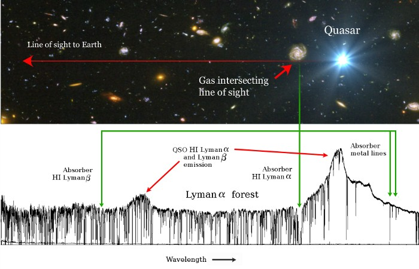

Sunrise at Las Campanas Observatory
{% endblock banner %} {% block content %} ### The Intergalactic Medium Most of my research is on the [intergalactic medium](http://uk.arxiv.org/abs/0711.3358), or IGM for short. The intergalactic medium is, as the name suggests, the stuff that is found between galaxies. Of the normal matter in the universe (baryonic matter), only a small fraction is made up of stars and galaxies. Most of it is in the IGM in the form of gaseous hydrogen and helium. Usually astronomers measure the electromagnetic radiation—such as light, radio waves or gamma rays—coming from objects in the universe. However, the IGM is dark and doesn't emit very much radiation. The best way to detect it is by looking at its silhouette against a bright background light source. The gas in the IGM can only absorb light with particular wavelengths—for example, hydrogen only blocks light at ultraviolet rest wavelengths. By measuring the pattern of absorption against the background light source, we can deduce the kind of elements there must be in the IGM. We can also use the shape of absorption profiles to measure how much gas there is, and how fast it's moving around. Even very small amounts of gas produce absorption profiles we can measure. Using this technique we can detect parts of the universe that cannot be measured in any other way. The most common background light source we use is a [quasar](http://adsabs.harvard.edu/abs/1967ARA%26A...5..399B), because they are very bright, and emit light evenly over a wide range of wavelengths. This means it's easy to see the absorption features from the IGM superimposed on top of the quasar light. The figure below shows a cartoon of a quasar acting as a light source (the bright blue object on the right). Light from the quasar passes through the IGM towards us. Below the cartoon is the spectrum of light from the quasar that we measure on Earth, with many absorption features from the IGM superimposed on the quasar's spectrum.  The 'Lyman-α forest' as shown in the figure is caused by hydrogen absorption. [Lyman-α](http://en.wikipedia.org/wiki/Lyman_series) is the strongest absorption feature from hydrogen atoms. Due to the expansion of the universe, the wavelength of light from the background quasar is stretched (or redshifted) as it travels towards us. The further the light travels, the more it is redshifted. Therefore we see a 'forest' of lines, each at a different redshifted wavelength, each caused by a hydrogen gas cloud in the IGM at a different distance from the Earth.